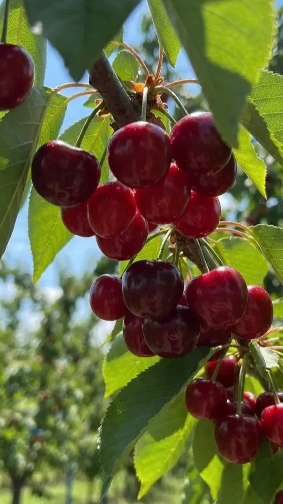
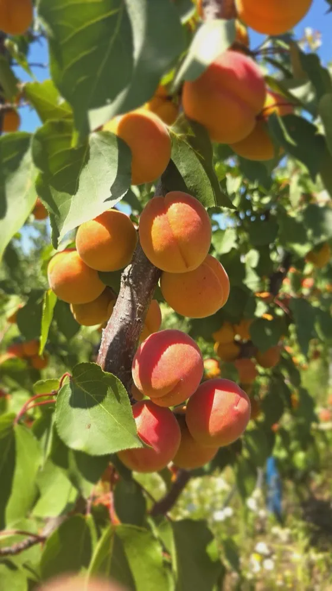
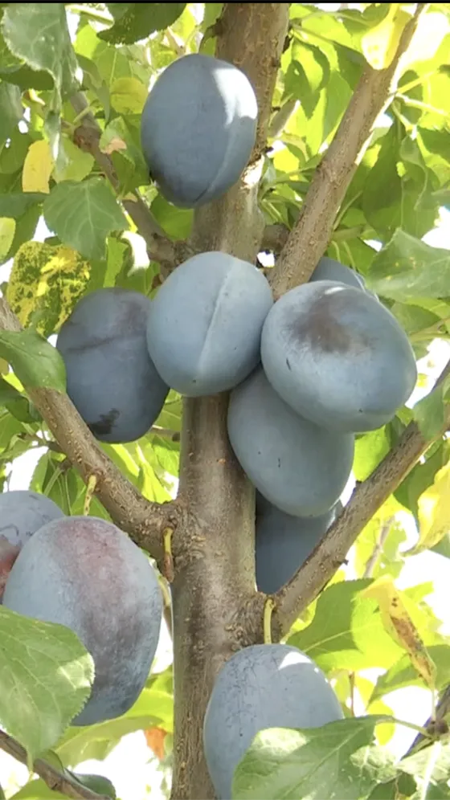
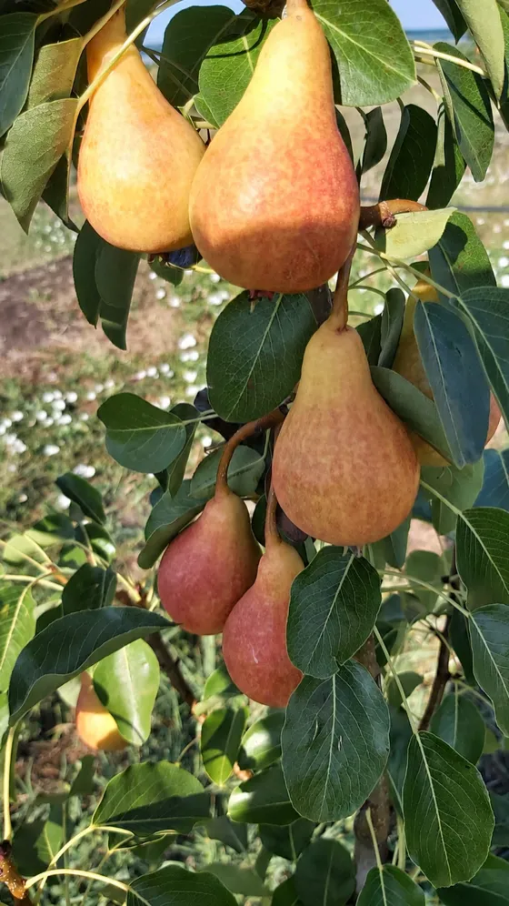
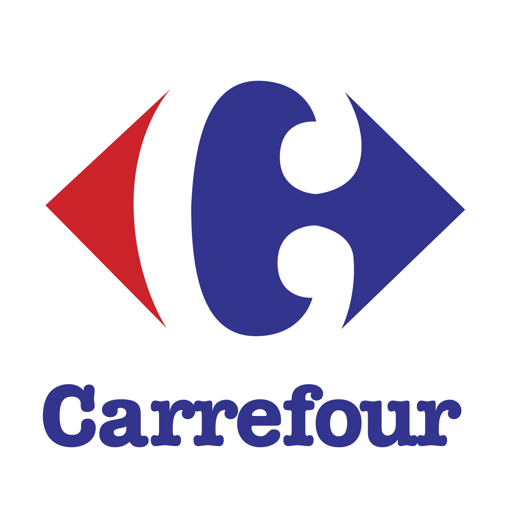
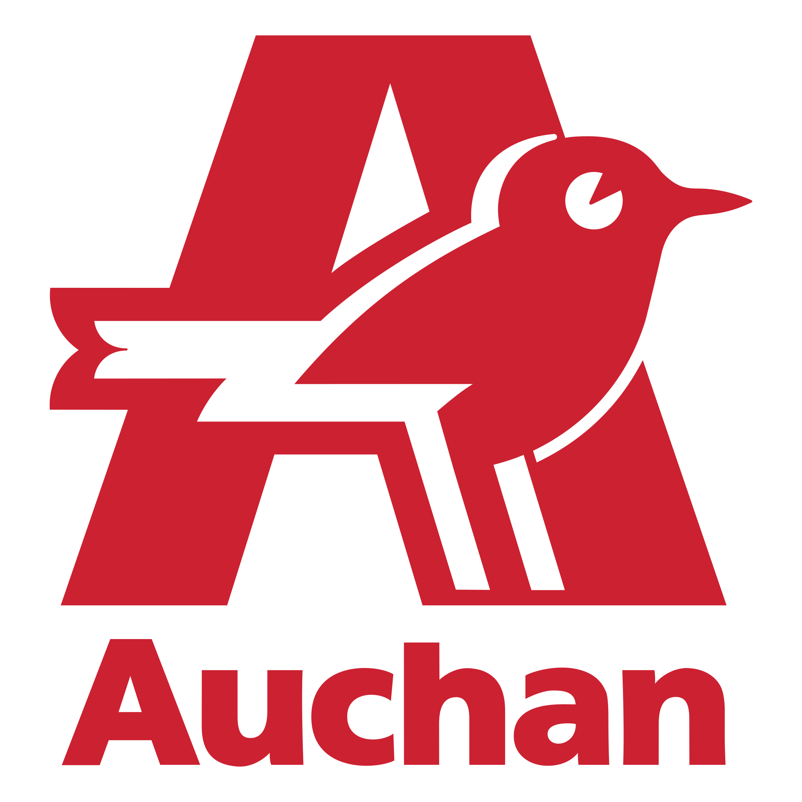

Patru fructe, o singură livadă
Cireșe, pere, prune și caise, crescute la Brabova, în județul Dolj.
- 0 hectare de livadă
- 0 ani de recoltă
- 0 tone culese anual
Cifre exemplificative, până la valorile reale de la fermă.
Fructele se coc puțin altfel aici. Se simte de la prima mușcătură.
Aceleași patru în fiecare an, pe același deal. Nimic altceva nu se plantează aici.
-

Cireșe
Mai — Iunie
Primele care se culeg. Se mănâncă direct din ladă, înainte să ajungă în bucătărie.
-

Caise
Iunie — Iulie
Cele mai scurte pe sezon dintre toate patru. Când sunt, sunt.
-

Prune
August — Septembrie
Cu bruma încă pe ele când ajung în ladă. Se coc târziu și se țin bine.
-

Pere
August — Octombrie
Culese ferme și lăsate să se înmoaie singure. Zeama se simte de la prima mușcătură.
Livada, filmată din dronă, în primăvara aceasta.
Fructele noastre ajung la

